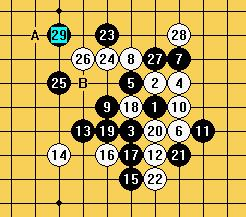

2009年全锦赛棋评-炫飞☆流逝
#1 2009年全锦赛棋评-炫飞☆流逝 作者：流逝 发表时间：2009-10-9 20:10:26
第一局 丘月局执黑（交换后）胜汪清清
=======上图对应的爱五子棋谱代码如下，以便你拆解：========
h8h9g7i9g9i7i10g10f8i8j7h6e7d6g5f6g6g8f7h7i6h5f11f10d9e10h10i11d11e9c10e8e12f13c11g11d7c7d8d10c9
======================================================
汪清清是今年少青赛的冠军，对于拥有冠军头衔的人物，我肯定是不敢掉以轻心的。而且之前白痴告诉我她挺强的。
汪清清开出了丘月局，我没有太多的思考就选择了交换。毕竟想要拿下1分的话，丘月局用黑棋的机会更多一些。
两打之后清清给我留下了2打，实战到11手都是正常变化。12手是让我很吃惊的一手，我知道结论是黑必胜，可是我一点都不会。顿时感到头疼了。
长考之后，我选择了13-15的下法，赛后证明这两手没有错误。
白棋的14-16是唯一防，17当然是理所当然的一手，实战中我的19和正谱有一些偏离，正谱中的19手是在23的位置直接盖眠三。这样一直交换到22手，23当然是盘面上最好的选择。
23手落下之前我也进行了长考，一直考虑着24=f9我该如何进攻，也确实考虑完了24=f9之后黑棋的进攻路线。可是在我落子之后，清清几乎没有考虑的就落下了f10这个点。
之前长考所有的计算都已经没用了，没办法，从头来过吧。分析后得出，25手的选择如上图基本上有ABC三个点可以选择，如果25=C,26=A 之后，白棋彻底断开黑棋上下的连接，黑棋再也找不到有效的必胜手段。所以我很快的排除了C点。
25=B？确实是很强的一手，算了几个防点黑都能直接追胜，可是，之后26=h10？？经过反复的计算之后，我发现黑棋无法必胜。
剩下的选择只有A点了，之后白棋只能有e8和e10两个防点，e8之后，黑复杂vct。对于e10，是让我感觉很苦闷的一个防点，大量的计算和分析之后，我已经无法做到现场算出地毯胜了。只隐约看到实战中27-29的手段，选了几个防点去计算也发现黑都能直接vct。这个时候我的时间只剩下了15分钟不到，而汪清清，还只用了几分钟。
时间的催促下，逼迫着我下了实战的25手，而汪清清，只考虑了几分钟就落下了26=e10，27-29我没有再敢用时间去分析了，草草的落下之后，汪清清开始长考，而我也赶紧利用这个时间去寻找白棋的强防。

白棋只有AB两个点可以选择防守，如果A点之后，我已经找不到黑棋的vct了，但是事实上，黑棋还是可以vct的。实战中我却没有计算出来。
幸运的是，清清长考之后落下了30=B，这让我如释重负，用了几分钟的时间复算了一下后面的vct，之后，再没有给汪清清机会。
艰难取胜的一盘！
第二轮：瑞星局执黑（未交换）胜陈亮。
=======上图对应的爱五子棋谱代码如下，以便你拆解：========
#2 Re:2009年全锦赛棋评 作者：黄药师 发表时间：2009-10-9 20:23:17
兄弟，图打不开啊。#3 Re:2009年全锦赛棋评 作者：失落刀 发表时间：2009-10-9 20:24:11
图片是QQ空间的，这里无法直接打开。#4 Re:2009年全锦赛棋评 作者：王志伟123 发表时间：2009-10-9 20:53:54
看不到图片晕！#5 Re:2009年全锦赛棋评 作者：流逝 发表时间：2009-10-9 21:09:33
我的晕 我研究下#6 Re:2009年全锦赛棋评 作者：失落刀 发表时间：2009-10-9 21:57:21
图片现在都可以看到了，辛苦了哈。#7 Re:2009年全锦赛棋评 作者：刀魂 发表时间：2009-10-9 22:11:59
==============================
此帖内容被屏蔽!
==============================
此帖被流逝 屏蔽于 2009-10-9 23:16:46
#8 Re:2009年全锦赛棋评 作者：流逝 发表时间：2009-10-9 23:16:33
请问楼上你懂棋吗，别来评价我的棋。你的回帖我删了。#9 Re:2009年全锦赛棋评 作者：炫飞冰弦 发表时间：2009-10-10 0:34:15
在一个月黑风高的夜晚，悄悄的 搬个凳子坐下来。。。慢慢看流逝的棋评
#10 Re:Re:2009年全锦赛棋评 作者：刀魂 发表时间：2009-10-10 8:37:23
引用：
原文由 流逝 发表于 2009-10-9 23:16:33 :
请问楼上你懂棋吗，别来评价我的棋。你的回帖我删了。我昨天刚学的，不太懂，，，多多见谅哈。。。

#11 Re:2009年全锦赛棋评 作者：邓飞 发表时间：2009-10-10 10:35:12
膜拜一下
#12 Re:2009年全锦赛棋评 作者：傀儡 发表时间：2009-10-10 10:54:21
偶像，膜拜下，钱不够，就不送花了。。。
#13 Re:2009年全锦赛棋评 作者：雅匪 发表时间：2009-10-10 15:50:20
学习（想法搁在心里） 。
#14 Re:2009年全锦赛棋评 作者：小丸.net 发表时间：2009-10-10 16:35:17
先不管，鲜花侍候，然后好好学习！有机会去砍流逝~!#15 Re:2009年全锦赛棋评 作者：钟梦 发表时间：2009-10-10 18:56:38
猪师父，看到你取得这样的成绩，对于我来讲，比什么都高兴~~~
嘿嘿~~~你是我的骄傲~~~~~~
继续加油哦
#16 Re:2009年全锦赛棋评 作者：nara 发表时间：2009-10-10 20:10:52
棋评不错，来学习了！呵呵！
#17 Re:2009年全锦赛棋评 作者：棋癜 发表时间：2009-10-11 1:23:46
流大师实战也好猛哦#18 Re:2009年全锦赛棋评-炫飞☆流逝 作者：雨一直下 发表时间：2009-10-11 16:59:56
这次流猪表现太牛了,恭贺我们的流5段!
流5段现在春风得意,爱情甜蜜,真幸福啊。
#19 Re:2009年全锦赛棋评-炫飞☆流逝 作者：魔戒 发表时间：2009-10-16 18:07:33
 偶像二号 好强大！支持你！
偶像二号 好强大！支持你！ 没钱送花了。。
没钱送花了。。［ 流逝 于 2009-10-18 5:39:19 时花20金币送鲜花一朵］
#20 Re:2009年全锦赛棋评-炫飞☆流逝 作者：伊依 发表时间：2009-10-16 19:08:58
猪徒弟加油成都再次辉煌
#21 Re:2009年全锦赛棋评-炫飞☆流逝 作者：蝶雨 发表时间：2009-10-25 20:49:19
终于可以说话了，先踩你一下